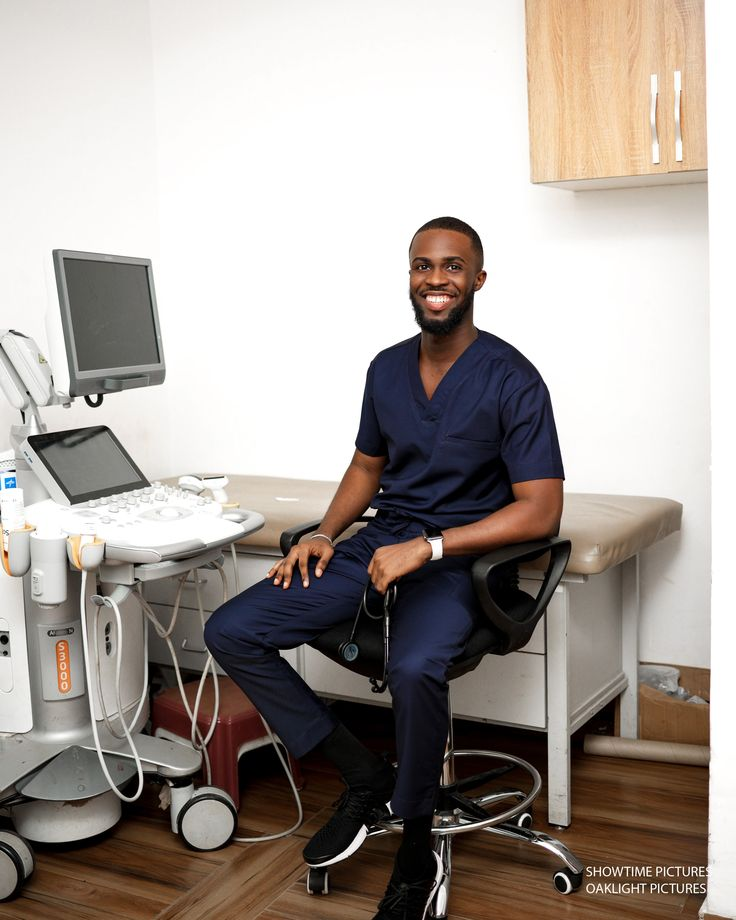
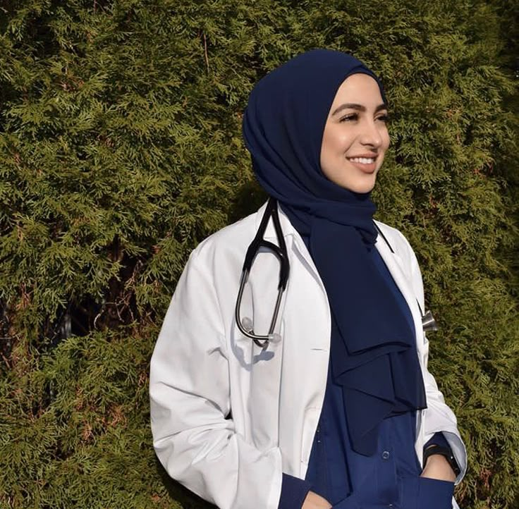

Meet Our Medical Team
At Shiny Hunters Hospital, our doctors are committed to providing professional, compassionate and patient-centred healthcare.
Dr. Sarah Mwangi
General Physician
Experienced in diagnosing and managing a wide range of medical conditions while providing personalised patient care.

Dr. Daniel Otieno
Surgeon
Specialises in surgical care and works closely with patients to ensure safe and effective treatment.

Dr. Amina Hassan
Paediatrician
Dedicated to providing quality healthcare for children and supporting families throughout their healthcare journey.

Dr. James Kamau
Cardiologist
Focuses on the prevention, diagnosis and treatment of cardiovascular conditions.

Dr. Mary Wanjiku
Gynaecologist
Provides professional women's healthcare services with a focus on compassionate and respectful patient care.
Dr. Brian Kiptoo
Emergency Physician
Provides rapid assessment and treatment for patients requiring urgent medical attention.